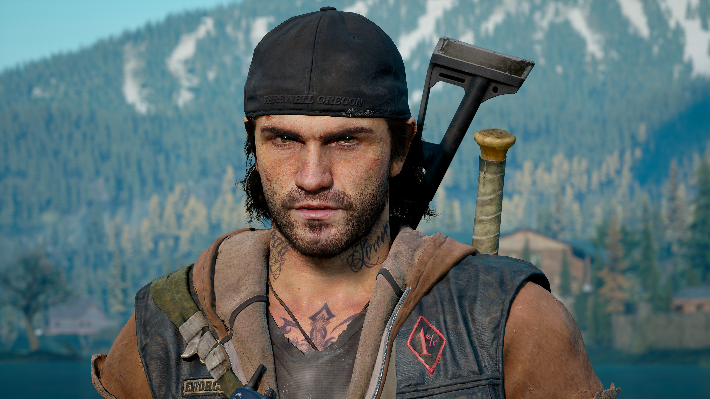
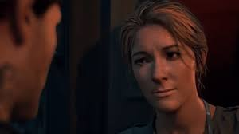
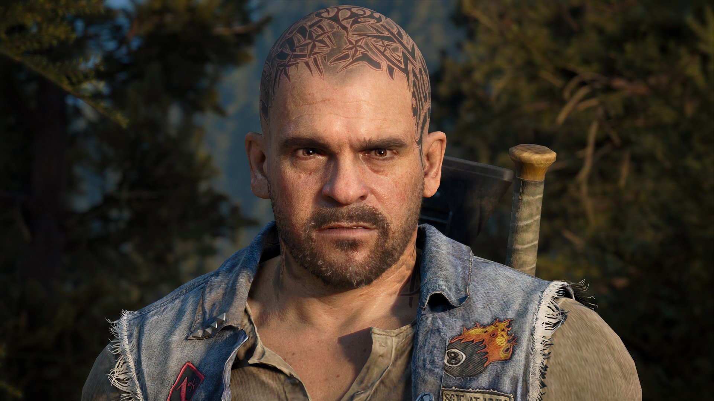

À Propos du Jeu
"Days Gone" est un jeu d'action-aventure développé par Bend Studio et édité par Sony Interactive Entertainment. Le jeu se déroule dans un monde ouvert post-apocalyptique infesté de créatures hostiles. Vous incarnez Deacon St. John, un chasseur de primes et motard, essayant de survivre dans cet environnement dangereux.
Personnages Principaux
Deacon St. John
Deacon St. John est le personnage principal du jeu. Ancien motard hors-la-loi, il lutte pour sa survie dans ce monde post-apocalyptique.
Sarah Irene Withaker
Sarah Irene Whitaker est un personnage fictif du jeu vidéo "Days Gone". Elle est la femme de Deacon St. John, le protagoniste du jeu. Sarah est une scientifique travaillant dans le domaine de la recherche médicale avant que le monde ne soit plongé dans un scénario apocalyptique. Le jeu explore la relation complexe entre Deacon et Sarah dans un monde post-apocalyptique infesté de créatures hostiles. L'histoire de Sarah Irene Whitaker est un élément clé de la trame narrative de "Days Gone".
Boozer (William Gray)
Boozer, de son vrai nom William "Boozer" Gray, est un personnage de fiction du jeu vidéo "Days Gone". Il est le meilleur ami de Deacon St. John, le protagoniste du jeu. Boozer était également un membre du même club de motards que Deacon avant que le monde ne soit plongé dans un scénario apocalyptique. Après l'effondrement de la civilisation, Boozer et Deacon luttent pour survivre dans un monde post-apocalyptique infesté de créatures hostiles. Boozer est caractérisé par son aspect robuste et son attitude déterminée. L'histoire explore la relation étroite entre Deacon et Boozer alors qu'ils naviguent à travers les défis et les dangers de cet environnement hostile. Boozer joue un rôle significatif dans le récit de "Days Gone".
Rikki Patil

Rikki Patil est un personnage du jeu "Days Gone". Elle est membre du club de motards et joue un rôle important dans l'histoire du jeu. Avec sa personnalité forte et sa compétence en mécanique, Rikki contribue aux efforts de survie du groupe dans ce monde post-apocalyptique.
Iron Mike

Iron Mike est le leader d'une communauté pacifique dans "Days Gone". Il cherche à maintenir la paix et la coopération parmi les survivants dans ce monde post-apocalyptique. Son personnage apporte une dimension de leadership et de résilience à l'histoire du jeu.
Lisa Jackson

Lisa Jackson est un personnage du jeu "Days Gone". Elle est une jeune survivante dans ce monde hostile, et son histoire évoque des thèmes de vulnérabilité et de courage. Lisa apporte une perspective unique à l'expérience narrative du jeu.